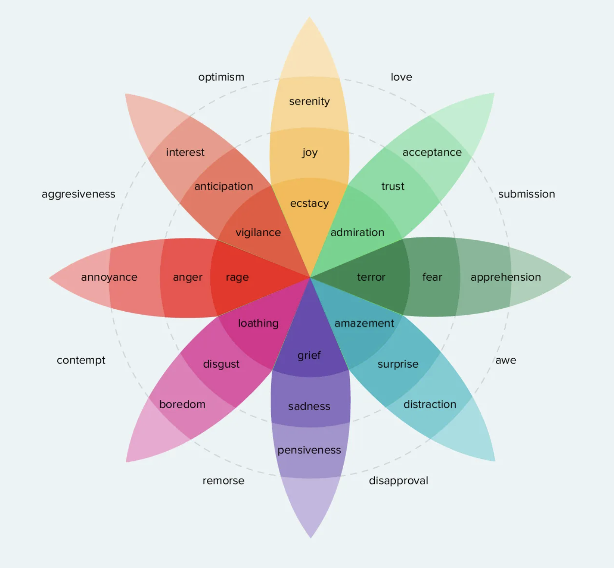

COMM 605
Week 9: Dictionary/Lexicon-based Sentiment Analysis
What is sentiment analysis?
Sentiment analysis measures the polarity or tonality of texts by identifying and assessing expressions people use to evaluate or appraise persons, entities (e.g., products, services) or events (Pang and Lee 2008; Soroka 2014).
Sentiment on social media: people use social media to express their feelings, attitude, views, arguments, opinions on wide range of topic:
- Business: Users reviews, customers attitude and trends, sales performance
- Health: Depression, public health
- Politics: election prediction, polarization, public opinion or media tone
- Engagement in Advertising/Strategic communication: “if it bleeds, it leads.”
Business: many users give feedbacks and reviews various products and services on various e-commerce sites. User’s ratings and reviews on multiple platforms encourage vendors and service providers to enhance their current systems, goods, or services.
People have been sharing their thoughts, opinions, and feelings on the Covid-19 pandemic on social media. To save patients from mental health issues like depression, health practitioners might use automated sentiment and emotion analysis
In politics, a prominent example is media negativity, a concept that captures the over-selection of negative over positive news, the tonality of media stories, and the degree of conflict or confrontation in the news. Or identify issue positions or public opinion in online debates; for studying negative campaigning.
Sensational stories whose subject is grim and menacing are likely to get more attention, as expressed in a decades-old mantra, “if it bleeds, it leads”.
Measurement of sentiment analysis
Level of analysis:
- word-level, sentence-level, document-level, aspect-level, concept-level
Measurement:
- Polarity-based setniment:a polarity is normally a categorical attribute: positive or negative.
- Valence-based sentiment: a valence is in the form of a continuous value indicating a degree of sentiment.
What about emotions?
Emotions: complex states of feeling lead to a change in thoughts, actions, behavior, and personality.
- Dimensional emotion model (Russel, 1980)
- Discrete emotion model (Plutchik, 2003)
Dimensional emotion model

Two-dimensional plane commonly called the valence-arousal plane: The arousal dimension may vary from “not-aroused” to “excited” while the valence dimension can be negative or positive.
This figure illustrates the four-class model by Russell that has been widely adopted by various researchers for their research. The model consists of four quadrants with each quadrant represents high or low arousal, with negative or positive valence. The first quadrant shows high arousal with positive valence which is associated with happy emotion, the second quadrant shows high arousal with a negative valence usually associated with angry emotions, the third quadrant shows low arousal with negative valence that represents a sad emotion and the fourth quadrant with low arousal with positive valence that associates with calm emotion.
Discrete emotion model

Plutchik proposed a wheel model consisting of eight basic emotions which include joy, trust, fear, surprise, sadness, disgust, anger, and anticipation
The wheel model describes emotions respective to the intensity, whereby strong emotions are placed in the center and weaker emotions are placed towards the edge of the flower bloom-like model
Methods in sentiment analysis
- Dictionary-based (this tutorial): Linguistic Inquiry and Word Count(LIWC)
- It makes use of a predefined list of words, where each word is associated with a specific sentiment.
- A basic assumption of using a dictionary is that it contains the most important words required for rating a text.
- Supervise machine learning and Deep learning (pre-trained model, large language model)
- It relies on supervised classification approaches based on training data, where sentiment detection is framed as a binary (i.e., positive/negative/neutral).
Questions: are they able to produce the same sentiment rating of texts as a human coder? - van Atteveldt (2003): * The best performance is still attained with trained human or crowd coding * None of the used dictionaries come close to acceptable levels of validity * Machine learning, especially deep learning, substantially outperforms dictionary-based methods but falls short of human performance
LIWC (Linguistic Inquiry and Word Count) is a text analysis tool that evaluates emotional, cognitive, and struc- tural components of a given text based on the use of a dictionary containing words and their classified categories.
A recent comparison of English language dictionaries and machine learning approaches found that “dictionaries had exceptional precision, but very low recall, suggesting that the method can be accurate, but that current lexicons are lacking scope. Machine learning systems worked in the opposite manner, exhibiting greater coverage but more error” (Soroka et al. 2015a, p. 112).
Empirical examples
- Dubovi and Tabk (2021): public engagement with science on YouTube
- Detect emotion via lexicon-based sentiment analysis based on
syuzhetpackage - Statistical analysis on cognitive engagement (argumentative expression) with emotional and behavioral engagement
- Detect emotion via lexicon-based sentiment analysis based on
- Harris and Krishnan (2023): Suicide Prevention Public Service Announcements and User Comments on YouTube
- (Human) Content analysis on 72 videos: gain-loss frame; argument-narrative format
- (Computational) Textual analysis on users’ comments
- Sentiment analysis: negative and positive
- Latent semantic analysis: help seeking or avoidant